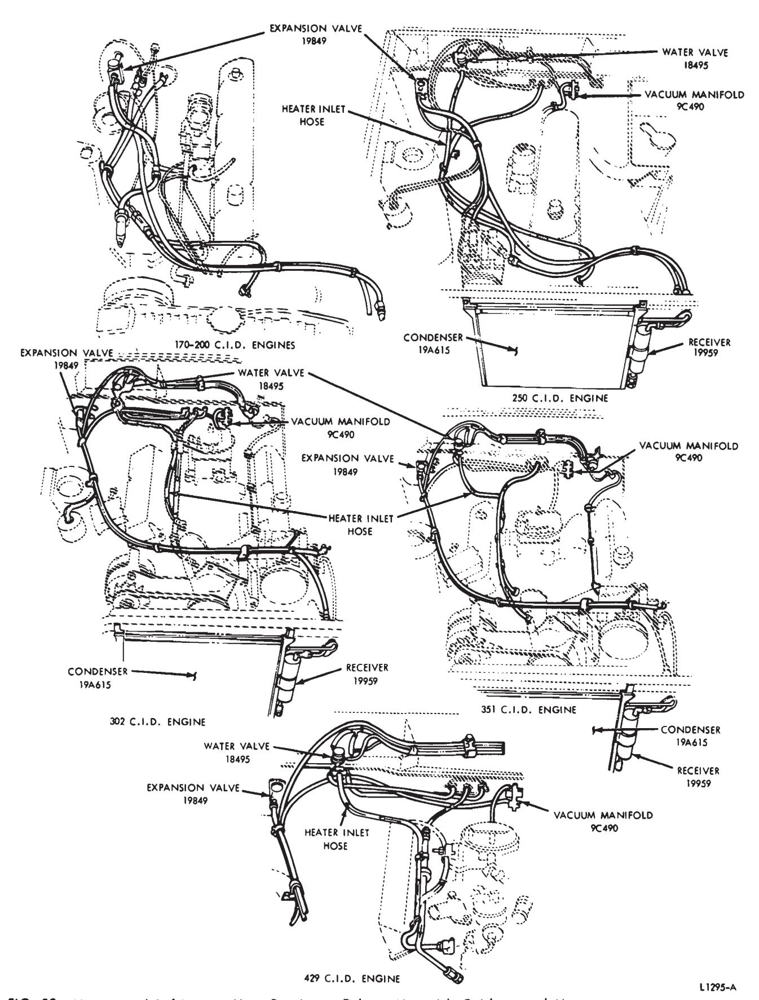
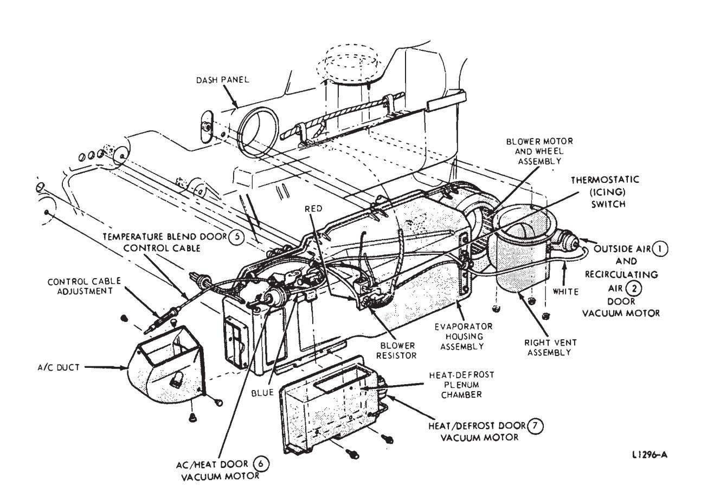
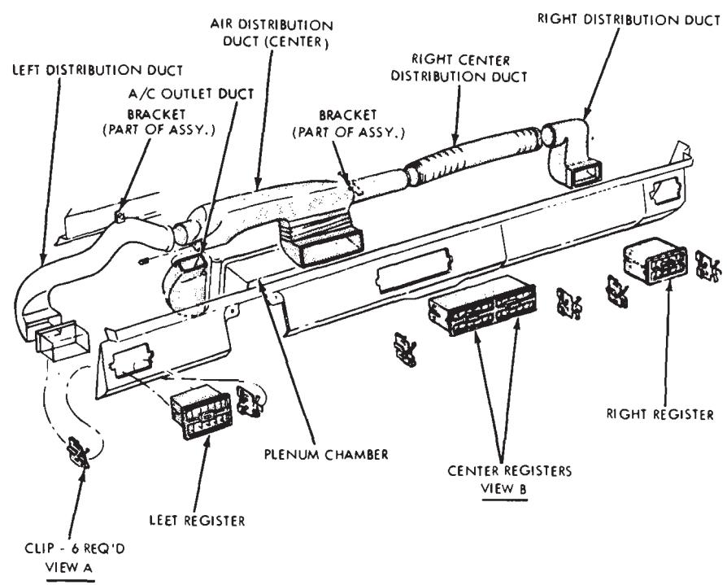
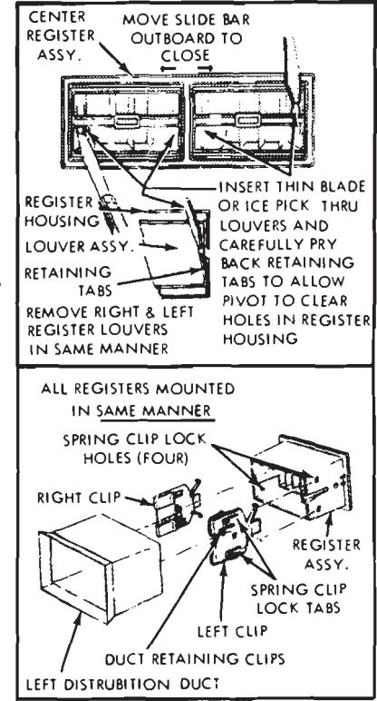
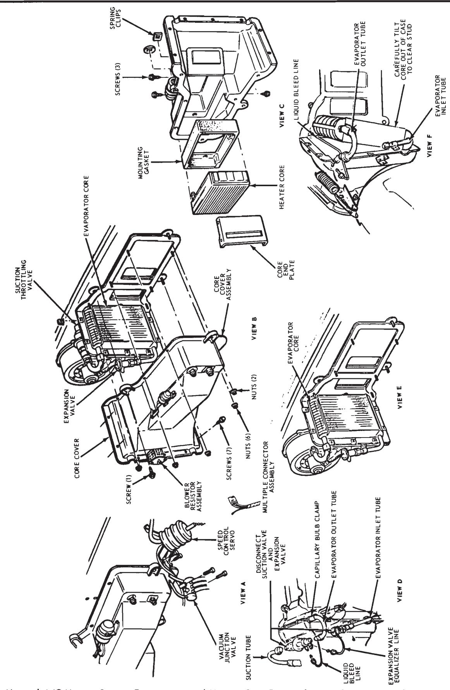
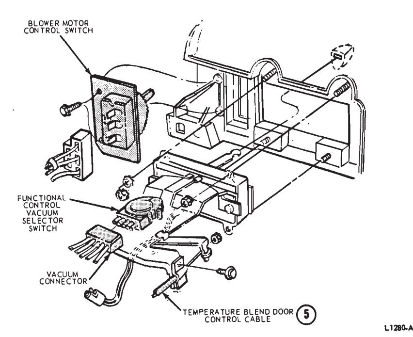
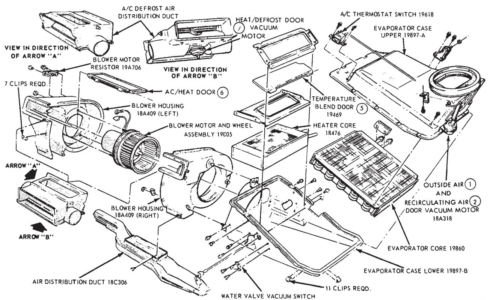
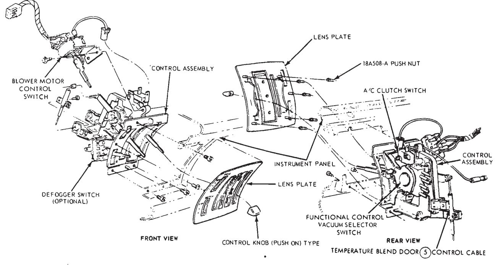
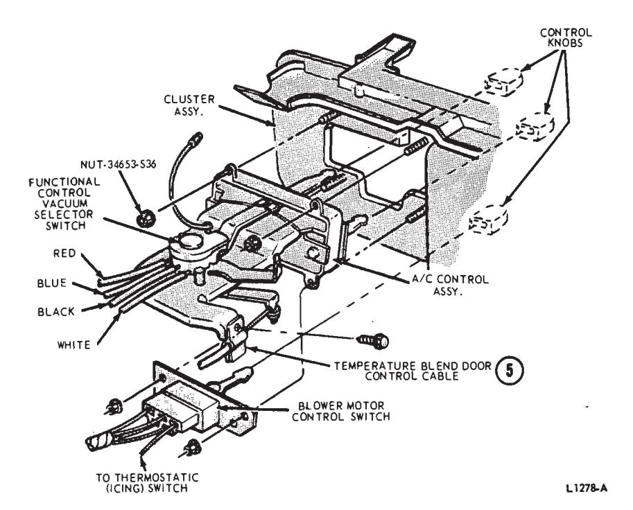
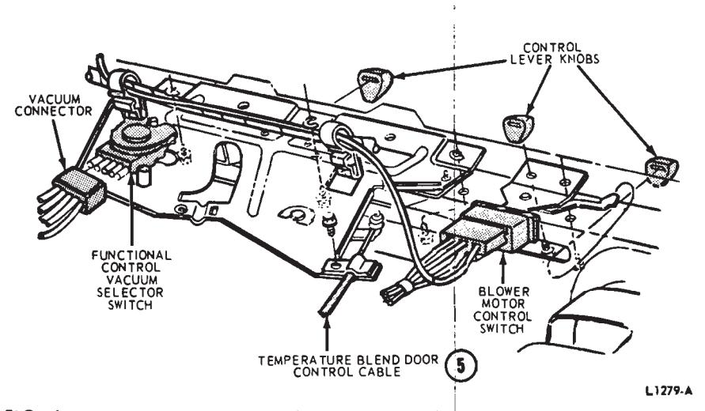

Air Conditioning Systems · 34-04-61b
Evaporator Housing—Falcon, Fairlane, and Montego
Removal
- Remove the carburetor air cleaner and disconnect the battery ground cable. 2. Drain the cooling system.
- Discharge the air conditioning system (NOTE SAFETY PRECAUTIONS).
- Disconnect the high and low pressure refrigerant lines at the expansion valve.
- Remove two screws attaching the two-piece seal retainer to the dash panel and remove the retainer and refrigerant hose seal.
- Disconnect the three heater hoses at the dash panel (Fig. 53).
- Disconnect the two clutch wires from the vacuum switch mounted on the water valve mounting plate.
- Disconnect the vacuum hoses at the water valves, clutch switch, and vacuum supply tank. Push the vacuum hose-wire harness through the dash panel into the passenger compartment. 9. Remove the drain tube hose - clamp, hose, and seal from the evaporator housing.
- Remove the snap-in clip retaining the defroster nozzle assembly to the heat/defrost plenum chamber, and disengage the defroster nozzle from the plenum (Fig. 56).
- Disconnect the red-stripe vacuum hose from the heat/defrost door (7) vacuum motor.
- Remove two screws attaching the heat-defrost plenum chamber to the evaporator housing and remove the plenum chamber (Fig. 54).
- Remove the glove compartment liner.
- Disconnect the vacuum hose from the outside air (1) and recirculating air (2) door vacuum motor.
- Remove three nuts retaining the right vent to the cowl top panel and remove the vent assembly (Fig. 54).
- Disconnect the vacuum connectors from the control assembly (Figs. 6, 7 and 8).
- Disconnect the temperature blend door (5) control cable from the control assembly.
- Disconnect the wires from the blower resistor and icing switch (Fig. 54).
- Disconnect the right, left, and center A/C air duct flexible hoses from the center air duct. Remove the right flexible hose from the vehicle (Fig. 55).
- Remove the stud fastener and disconnect the center air duct from the evaporator housing A/C duct (Fig. 55).
- Remove one screw attaching the center air duct support bracket to the defroster nozzle and remove the center air duct (Fig. 55).
- Remove two defroster nozzle attaching screws and remove the defroster nozzle (Fig. 56).
- Remove four nuts retaining the evaporator housing assembly to the dash panel, and remove the assembly from the vehicle.
Installation
-
Position the evaporator housing assembly to the vehicle and install the four retaining nuts.
-
Position the defroster nozzle to the defroster opening and install the two attaching screws (Fig. 56).
-
Position the center air duct to the evaporator housing A/C duct. Install the stud fastener to retain the

Fig. 53 — Heater and Refrigerant Hose Routings—Falcon, Maverick, Fairlane and Montego
Fig. 54 — Heater Air-Conditioner Installation—Falcon, Fairlane, and Montego
Fig. 55 — A/C Air Duct Installation—Falcon, Fairlane and Montego
center duct to the A/C duct (Fig. 55).
-
Install the screw attaching the center air duct support bracket to the defroster nozzle (Fig. 55).
-
Connect the A/C air duct flexible hoses to the center air duct. Connect the right flexible hose to the register.
-
Connect the wires to the blower resistor and icing switch.
-
Connect the temperature blend door (5) control cable and the vacuum connector to the control assembly (Figs. 6, 7 and 8).
-
Position the right vent to the cowl top panel and install the three retaining nuts. Connect the whitestripe vacuum hose to the outside air (1) and recirculating air (2) door vacuum motor (Fig. 54).
-
Position the heat/defrost plenum chamber to the evaporator housing and install the two attaching screws (Fig. 54).
-
Connect the red-stripe vacuum hose to the heat/defrost door (7) vacuum motor.
-
Position the defroster nozzle assembly to the heat/defrost plenum chamber and install the snap-in clip (Fig. 59).
-
Position the drain hose and seal to the evaporator housing and install the hose clamp.
-
Insert the vacuum hose-wire harness through the hole in the dash panel and press the seal into the hole.

Fig. 59 — Manual A/C-Heater System Evaporator and Heater Core Removal—Lincoln Continental
INSTRUMENT
PANEL
[Fig. 56](#fig-56) -- Defroster Nozzle Installation-Falcon, Fairlane and Montegos-A
14. Connect the vacuum hoses to the water valves. The yellow-stripe hose should be connected to the right water valve which is identified with a yellow dot. The blue-stripe hose should be connected to the left water valve which is identified with a blue
ASSEMBL Y
18490
HEAT-DEFROST
CHAMBER
15. Connect the black hose to the vacuum reservoir and the short hose
from the yellow-stripe hose to the clutch switch.
16. Connect the two clutch wires to the clutch vacuum switch (Fig. 53). 17. Connect the three heater hoses to the heater core at the dash panel as shown in Fig. 53). 18. Position the seal and retainer to the dash panel and evaporator regrigerant lines, and install the two attaching screws. 19. Connect the high and low pressure refrigerant lines at the expansion valve. 20. Fill the cooling system, connect the ground cable to the battery and install the carburetor air cleaner. 21. Leak test, evacuate, and charge the air conditioning system (NOTE SAFETY PRECAUTIONS).
Heater-Air Conditioner Assembly—Maverick
Removal
- Disconnect the battery ground cable and remove the air cleaner. 2. Drain the cooling system.
- Connect a manifold gauge set to the compressor service valves and isolate the compressor. If the heater-air conditioner is being removed for repair to the refrigerant system, discharge the refrigerant system (NOTE SAFETY PRECAUTIONS).
- Disconnect the high and low pressure hoses at the expansion valve.
- Disconnect both heater hoses at the dash panel.
- Disconnect the heater-A/C assembly retainer, retaining nuts, and seal at the dash panel.
- Working inside the vehicle, disconnect the ignition switch from the package tray and position the switch out of the way.
- Remove the 5 bolts retaining the package tray and remove the tray.
- Disconnect the right and left air duct assembly from the heater-A/C assembly (Fig. 57).
- Remove the right cowl trim panel and the package tray bracket. 11. Remove the radio assembly.
- Remove the blower register retaining screw and remove the register.
- Disconnect the temperature blend door (5) control at the heater-A/C assembly.
- Remove the right duct assembly from the center register. Then, remove the center register retaining screws and remove the register.
- Disconnect the expansion valve hose and the refrigerant hose from the evaporator core.
- Disconnect the 4 vacuum hoses from the various vacuum motors.
- Disconnect the resistor assembly and the thermostatic switch from the heater-A/C assembly.
- Disconnect the blower ground wire from the brake support. 19. Remove the A/C drain tube.
- Remove the heater-A/C assembly from the vehicle.
Installation
- Position the heater-A/C assembly to the dash panel and install the retaining screw to the cowl.
- From the engine compartment side, install the heater-A/C assembly retaining nuts. Then, install the seal and retainer to the dash panel.
- Connect both heater hoses at the dash (Fig. 8).
- Connect both the high and low pressure hoses to the expansion valve.
- Connect the temperature blend door (5) control cable to the heater-A/C assembly.
- Connect the vacuum lines to the various vacuum motors. Also, connect the expansion valve hose and the refrigerant hose at the evaporator case.
- Connect the resistor assembly and thermostatic switch to the heater-A/C case. Then, install the blower ground wire to the brake pedal support.
- Install the center register assembly.
9. Install the A/C drain tube.
- Install the lower register assembly.
- Install the right package tray bracket, then install the right cowl side trim panel.
- Install both the left and right duct assemblies to the center register.
- Install the package tray under the instrument panel. Also connect the ducts to the registers.
- Install the ignition swtich to the package tray. 15. Install the radio assembly.
- Install the air cleaner and connect the battery ground cable.
- Leak test, evacuate and charge the system (NOTE SAFETY PRE-CAUTIONS) and connect the compressor back into the system.

Fig. 8 — Fairlane A/C-Heater Control AssemblyHeater and Refrigerant Hoses
The heater-air conditioner hose routings are shown in Fig. 53.
Evaporator Core— Falcon, Fairlane, and Montego
- Remove the evaporator housing from the vehicle and place it on a bench
- Remove the icing switch from the evaporator.
- Remove 21 screws and 6 clips and separate the evaporator housing.
- Disconnect the blower motor wire and remove the evaporator core.
- Transfer the mounting bracket and rubber pad to the new evaporator
- Install the evaporator core in the evaporator housing.
- Connect the heater blower wire and assemble the evaporator housing. 8. Install the icing switch.
- Install the evaporator housing in the vehicle.
Heater Core—Falcon, Fairlane, and Montego
- Remove the heater air conditioner assembly and place it on a bench.
- Remove 21 screws and 6 clips and separate the evaporator housing.
- Slip the heater core out of the plenum.
- Slip the new core with seal into the plenum.
- Assemble the evaporator housing and install the 21 screws and 6 clips. Connect the wires at the resistor block, and install the seal and retainer at the evaporator tubes.
- Install the heater-air conditioner assembly.
Expansion Valve—Fairlane, Falcon, Maverick and Montego
Removal
- Discharge the refrigerant into the garage exhaust system if the refrigerant system still contains some refrigerant (NOTE SAFETY PRE-CAUTIONS).
- Disconnect the (top) low pressure hose at the expansion valve (Fig. 54).
- Disconnect the (lower) high pressure hose at the expansion valve.
- Disconnect the refrigerant hoses from the evaporator core. Remove the expansion valve.
Installation
- Position the expansion valve to the evaporator core. Loosely start both fittings, then tighten them.
- Connect the two hoses at the expansion valve.
- Leak test, evacuate, and charge the system (NOTE SAFETY PRE-CAUTION). Test the air conditioning system.
Thermostatic (ICING) Switch—Falcon, Fairlane and Montego
Removal
- Remove the heater and air conditioner assembly from the vehicle.
- Remove the two thermostatic switch attaching plastic retainers.
- Pull the switch sensing tube from the evaporator core.
Installation
- Insert the sensing tube into the evaporator core fins.
- Position the thermostatic switch to the evaporator housing and install the two attaching retainers.
- Install the heater and air conditioner assembly in the vehicle.
Blower Motor—Maverick
To remove the blower motor, remove the radio assembly. Then, disconnect the ignition switch from the package tray. Remove the package tray and disconnect the left and right duct assemblies. Remove the register from the blower housing. Then, remove the lower nut retaining the blower housing to the evaporator assembly. Rotate the blower housing until it disengages from the evaporator housing, and disconnect the vacuum hoses at the motor on the blower housing. Disconnect the resistor assembly (Fig. 57) and the blower ground wire and remove the blower.
Thermostatic (ICING) Switch—Maverick
Removal
-
Disconnect the battery ground cable.
-
Remove the instrument cluster (Group 33). 3. Remove the ash receptacle.
-
Remove the left duct assembly and remove the center register. Then remove the right duct assembly. 5. Disconnect the vacuum hose from the heat/defrost door (7) at the plenum. Push the plenum assembly to the left to gain access to the thermostatic (icing) switch.
-
Disconnect teh 2 connectors at the switch and remove the two screws retaining the switch to the top of the evaporator (Fig. 57).
-
Working through the center grille opening and between the package tray and the instrument panel, remove the thermostatic (icing) switch and pull the sensing tube out of the core fins.
Installation
-
Feed the sensing tube into the core fins. Position the thermostatic (icing) switch to the evaporator and install the 2 retaining screws.
Connect the 2 connectors.
-
Correctly position the plenum and connect the right duct assembly. Connect the heat/defrost door (7) vacuum hose to the plenum.
-
Install the center register assembly and install the left air duct.
-
Install the ash receptacle assembly. 5. Install the cluster assembly.
-
Connect the battery ground cable.

Fig. 57 — A/C-Heater Assembly—Maverick
Clutch Switch—Maverick
Remove the instrument cluster assembly (Group 33), from the vehicle. Working through the cluster opening, disconnect the clutch switch connectors and remove the 2 nuts retaining the clutch switch to the control assembly and remove the switch (Fig. 58).
Ac/heat Door (6) Vacuum Motor—Maverick
To remove the motor, first disconnect the battery ground cable. Remove the radio assembly. Disconnect the 2 vacuum hoses from the vacuum motor, and remove the hose retaining clip. Remove the two nuts retaining the motor to the mounting bracket and remove the motor (Fig. 11).
Recirculating Air Door (2) Vacuum Motor—Maverick
To remove the recirculating door vacuum motor, remove the 2 nuts retaining the right air register to the instrument panel package tray. Then remove the inboard bolt from the right instrument panel bracket and remove the register assembly. Mark the position of the motor arm and re- move the screw connecting the arm to the motor (Fig. 11). Disconnect the vacuum hose from the motor, then remove the 2 screws securing the motor to the bracket and remove the motor.
Heat/defrost Door (7) Vacuum Motor—Maverick
Removal
- Disconnect the battery ground cable. 2. Remove the radio assembly.
- Remove the 2 screws retaining the center register assembly to the instrument panel and remove the register. 4. Remove the ash receptacle.
- Disconnect the left and right duct assemblies from the center register.
- Disconnect the ignition switch from the package tray. Then, remove the package tray by removing the 5 retaining bolts.
- Disconnect the left and right air ducts from the outside registers.
- Disconnect the vacuum hose from the blower housing.
- Remove the register assembly from the blower housing.
- Remove the lower nut retaining the blower motor to the evaporator housing. Rotate the blower motor to disengage it from the evaporator. Lower the blower motor to the floor.
- Remove the heat/defrost air distribution duct. Then, remove the retaining clip and open the door in the duct (Fig. 58).
- Remove the 2 nuts retaining the vacuum motor to the duct and remove the motor.
Installation
-
Position the vacuum motor on the duct and install the four retaining nuts and clip.
-
Position the duct under the instrument panel, then position the blower motor on the duct. Rotate the blower motor to lock it in place on the evaporator housing. Install the lower retaining nut.
-
Connect the vacuum hoses to the blower motor housing and to the heat/defrost door (7) vacuum motor.
-
Install the center register assem-
-
Connect the left and right air ducts to the center register assembly. 6. Install the ash receptacle.
-
Install the register on the blower assembly.
-
Install the package tray and connect the ducts to the registers at the ends of the instrument panel.

-
Install the ignition switch to package tray. 10. Install the radio assembly.
-
Connect the battery ground cable.
Blower Switch—Maverick
Access for blower switch removal is obtained by following the control assembly removal procedure in this part.
Blower Motor Switch— Falcon, Fairlane and Montego
- Remove the instrument panel pad (Group 47).
- Remove the switch knob and the switch retaining screws or nuts.
- Disconnect the switch and remove it.
- Position the new switch to the instrument panel, connect the wires to the switch and install it.
- Install the instrument panel pad (Group 47), and install the switch knob.
Blower Motor-Falcon, Fairlane and Montego
- Remove the glove box.
- Remove three nuts and remove the right fresh air duct. Disconnect the vacuum line from the actuator and position it out of the way.
- Disconnect the wire plug from the resistor.
- Remove three screws and remove the blower motor cover. Remove three nuts and remove the motor and blower wheel.
- Install the motor and wheel and ground wire in the heater case. Install the blower cover.
- Connect the wire to the resistor on the plenum. Check the blower operation. 7. Install the fresh air duct. 8. Install the glove box.
Blower Resistor
Refer to the blower resistor procedure in Part 34-03.
Ac/heat Door (6) Vacuum Motor—Falcon, Fairlane and Montego
-
Remove the instrument panel pad (Group 47). 2. Disconnect the left and right
A/C ducts from the center air distribution duct and remove the duct.
-
Remove the defroster nozzle.
-
Remove the two vacuum motor retaining screws, the vacuum motor to AC/heat door (6) push nut, the vacuum hose, and remove the vacuum motor.
-
Position the vacuum motor and install the mounting screws and the vacuum motor-to-AC/heat door (6) push nut.
-
Connect the vacuum hose to the vacuum motor. 7. Install the defroster nozzle.
-
Install the center air distribution duct, and connect the right and left A/C ducts.
-
install the instrument panel pad (Group 47).
Heat/defrost Door (7) Vacuum Motor—Falcon, Fairlane and Montego
The heat/defrost door (7) vacuum motor may be replaced after first removing the defroster plenum from the heater assembly.
After installing the vacuum motor, check its operation for full travel of the heat/defrost door (7).
Heater Air-Conditioner Control Assembly—Falcon
Removal
- Remove the three knobs from the control assembly.
- Remove the instrument panel pad (Group 47).
- Remove four nuts retaining the control to the back side of the instrument panel (Fig. 7).
- Disconnect the light and blower switch wires, control cable, and vacuum hoses, and remove the control assembly and blower switch from the vehicle.

Fig. 7 — Falcon A/C-Heater Control AssemblyInstallation
- Connect the wires, control cable, and vacuum hoses to the control assembly and blower switch.
- Position the control assembly and blower switch to the instrument panel and install the retaining nuts (Fig. 7).
- Install the instrument panel pad (Group 47).
- Install the control assembly knobs.
A/C-Heater Control Assembly—Maverick
To remove the control assembly, remove the instrument cluster (Group 15). Pull the knobs off the control levers. blower switch and defogger switch (Fig. 58). Carefully remove the face plate by prying it off at the top and bottom alternately. If this is not done, the mounting pins may be broken. Pry off the lens plate from the control assembly, then remove the screws retaining the control assembly to the instrument panel. Move the control assembly out through the cluster opening and disconnect all switches and cables. Remove the assembly.
When installing the control assembly, be sure to adjust the control cables. When installing the face plate, position all of the levers between the top of their slots and mid position. Position the plate so that the five pins line up with the elongated holes in the casting. Press evenly on the plate top, center and bottom until all five pins are fully engaged.
Heater Air-Conditioner Control Assembly— Fairlane
Removal
- Remove the instrument panel pad (Group 47).
- Remove the three knobs from the control assembly.
- Separate the two plastic clips retaining the main wiring harness to the control assembly and move the wiring away from the control assembly.
- Remove three control assembly to instrument panel attaching screws.
- Disconnect the control cable and vacuum hoses from the control assembly (Fig. 8). Remove the control assembly from the vehicle.
Installation
- Connect the vacuum hoses and control cable to the control assembly (Fig. 8).
- Position the control assembly to the instrument panel and install the attaching screws.
- Position the wiring harness to the control assembly and install the two clips.
- Install the knobs on the control assembly.
- Install the instrument panel pad (Group 47).
Heater Air-Conditioner Control Assembly— Montego
Removal
- Remove the knobs from the control assembly.
- Remove the instrument panel pad (Group 47).
- Remove three nuts retaining the control to the back side of the instrument panel (Fig. 6).
- Remove two screws attaching the blower switch to the back side of the instrument panel (Fig. 6).
- Disconnect the control cable, blower switch wires, and the vacuum hoses. Then, remove the control assembly and blower switch from the vehicle.

Fig. 6 — Montego A/C-Heater Control AssemblyInstallation
- Connect the vacuum hoses, control cable, and blower switch wires to the control assembly and blower switch.
- Position the control assembly and blower switch to the instrument panel, and install the attaching screws and retaining nuts (Fig. 6).
- Install the instrument panel pad (Group 18).
- Install the control assembly knobs.
Heater Air-Conditioner Temperature Blend Door (5) Control Cable—Falcon, Fairlane, and Montego
- Remove the battery ground cable.
- Remove the instrument panel pad (Group 47).
- On Montego only, remove the instrument cluster retaining screws and position the cluster out.
- On units with air conditioning, disconnect the left and right A/C ducts from the center air distribution - duct. Remove the defroster nozzle mounting screws and clip and remove the defroster nozzle.
- Disconnect the cable(s) at both ends and remove the cable.
- Connect the cable(s) to the control. Connect and adjust the heat/defrost door (7) and temperature blend door (5) control cables at the heater.
- On units with air conditioning, connect the temperature blend door (5) control cable and/or heat control cable on the evaporator. Adjust the cable at the turnbuckle.
- On Montego only, position the cluster to the instrument panel and install the mounting screws.
- On units with air conditioning, install the defroster nozzle and the center air distribution duct. Connect the right and left A/C ducts.
- Install the instrument panel pad (Group 18).
- Connect the battery ground cable.
Condenser—Falcon, Maverick
- Discharge the system, and remove both grille upper supports.
- Remove the hood latch and support assembly.
- Disconnect the evaporatorto-condenser hose at the receiver
- Disconnect the compressorto-condenser hose at the condenser, and remove the clip holding the hoses together at the radiator support.
- Remove the bolts attaching the condenser to the radiator front support, and remove the condenser.
- Transfer the receiver tank to the new condenser.
- Position the condenser to the radiator support, and install the attaching bolts.
- Connect the evaporator-to-receiver tank hose, and connect the compressor-to-condenser hose.
- Install the hood latch and support, and install both grille upper supports.
- Install the clip holding the hoses together at the radiator support.
- Leak test, evacuate and charge the system.
Condenser—Fairlane and Montego
- Discharge the A/C system a d remove the hood latch and support assembly.
- Loosen the clamp holding the hoses together at the radiator support.
- Disconnect the evaporator-to-condenser hose at the receiver tank.
- Disconnect the compressorto-condenser hose at the condenser.
- Remove the bolts attaching the condenser and radiator to the radiator support.
- Lift the condenser from the vehicle.
- Transfer the receiver tank to the new condenser.
- Position the condenser and radiator to the radiator support, and install the attaching bolts.
- Connect the evaporator-to-receiver tank hose, and connect the compressor-to-condenser hose.
- Tighten the hose clamp retaining screw, and install the hood latch and support assembly.
- Leak test, evacuate, and charge the system.
Receiver-Dehydrator Tank—Falcon, Fairlane and Montego
Remove the condenser-receiver assembly (in this section). Assemble the new receiver to the condenser and install the condenser-receiver assembly (in this section).